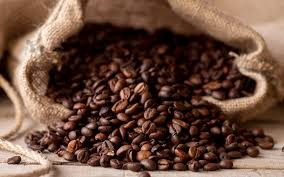
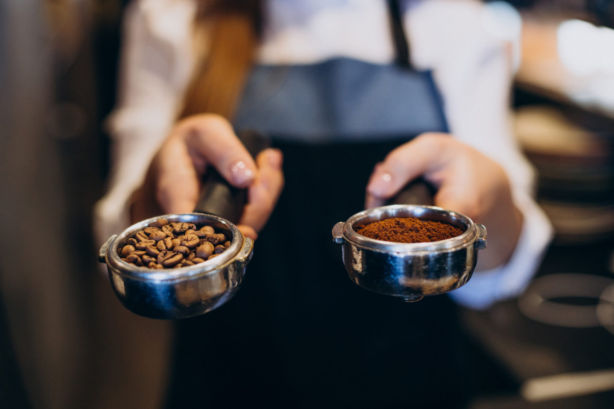

Los Tipos de Cafe de Especialidad
Aprenderás qué distingue a un café de especialidad del resto: desde su puntuación en la escala SCA hasta la trazabilidad completa de su origen.
Blog que habla temas relacionados al Cafe como Tipos de Cafe
que existen,
como se Prepara un Cafe de Especialidad,
Maquinas que hay para su Preparacion
Aprenderás qué distingue a un café de especialidad del resto: desde su puntuación en la escala SCA hasta la trazabilidad completa de su origen.

Conocerás las variedades de granos más destacadas del mundo, sus características únicas y cómo el origen geográfico define su sabor.

Entenderás cómo cada método extrae lo mejor del grano y cuál se adapta mejor a tu estilo, tu tiempo y la experiencia que buscas en tu taza.